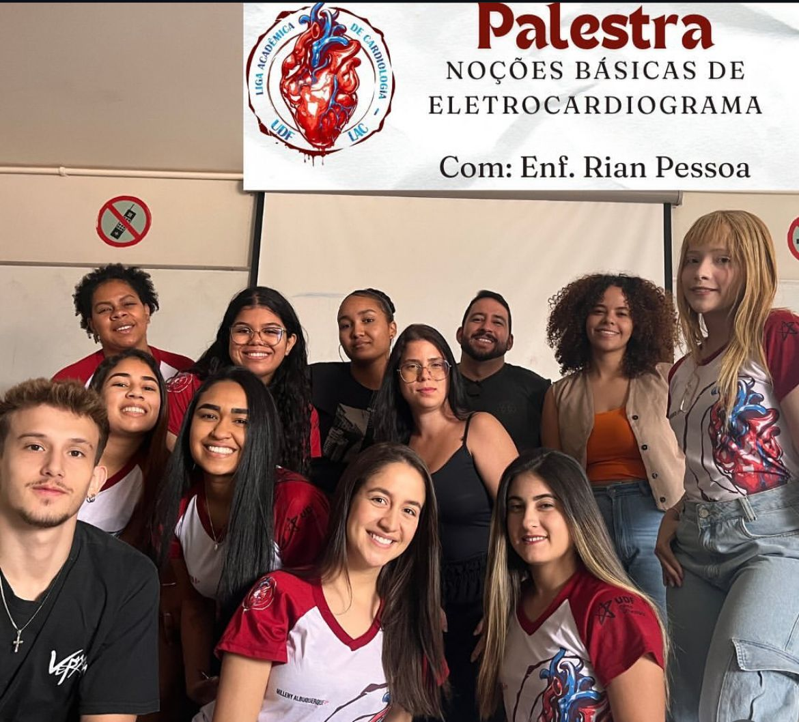
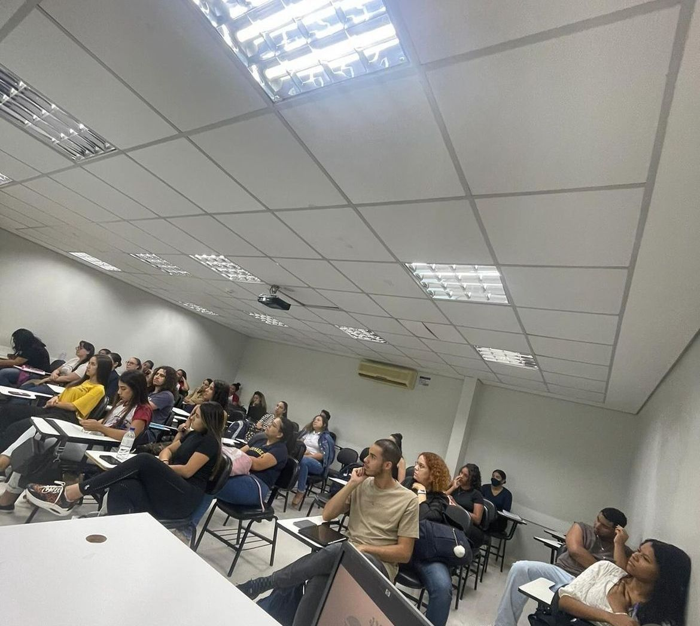
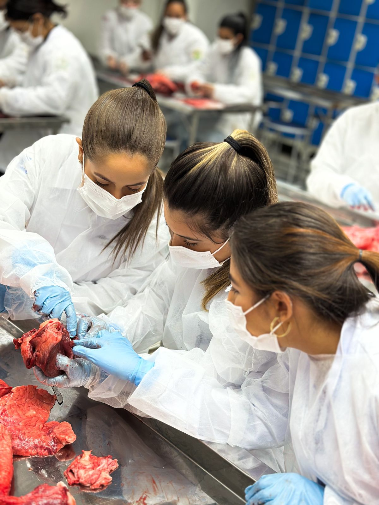
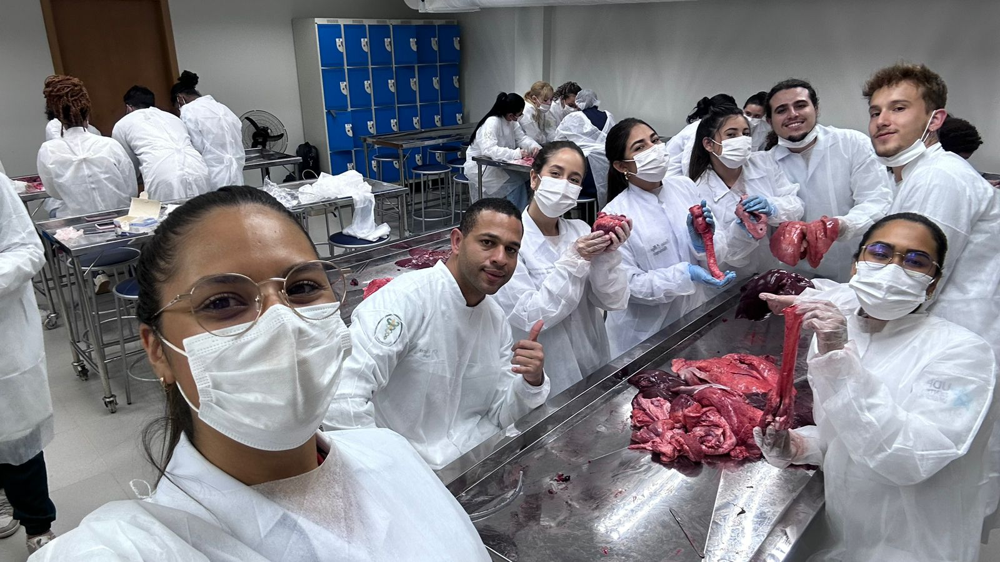
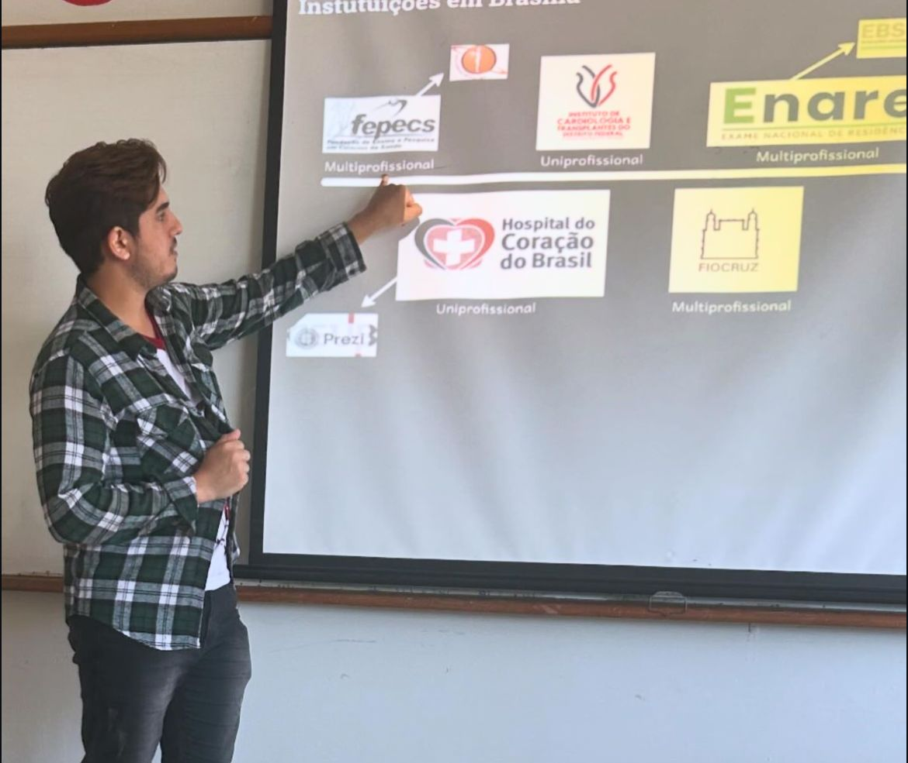
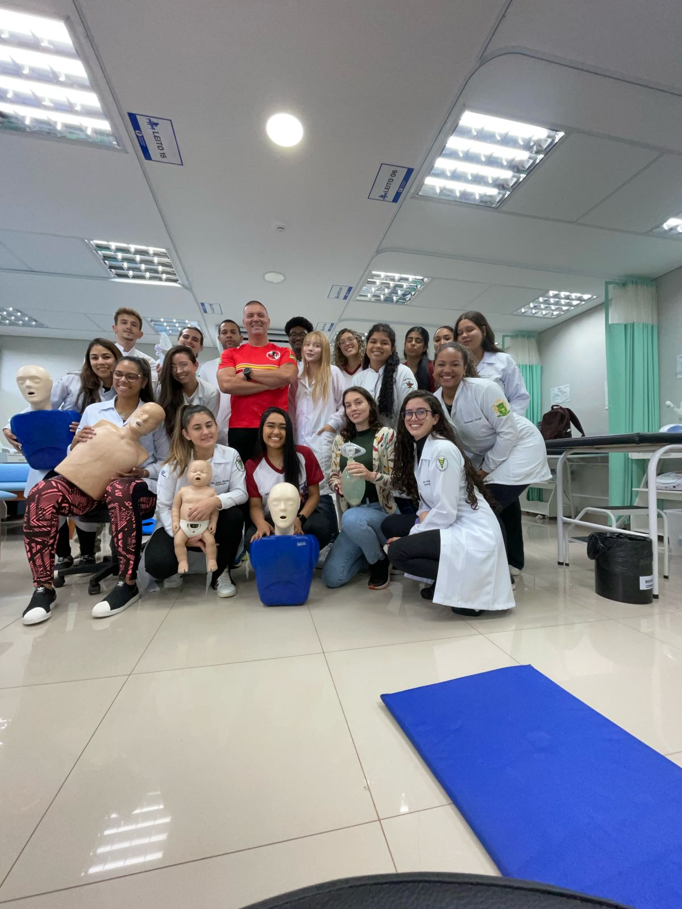
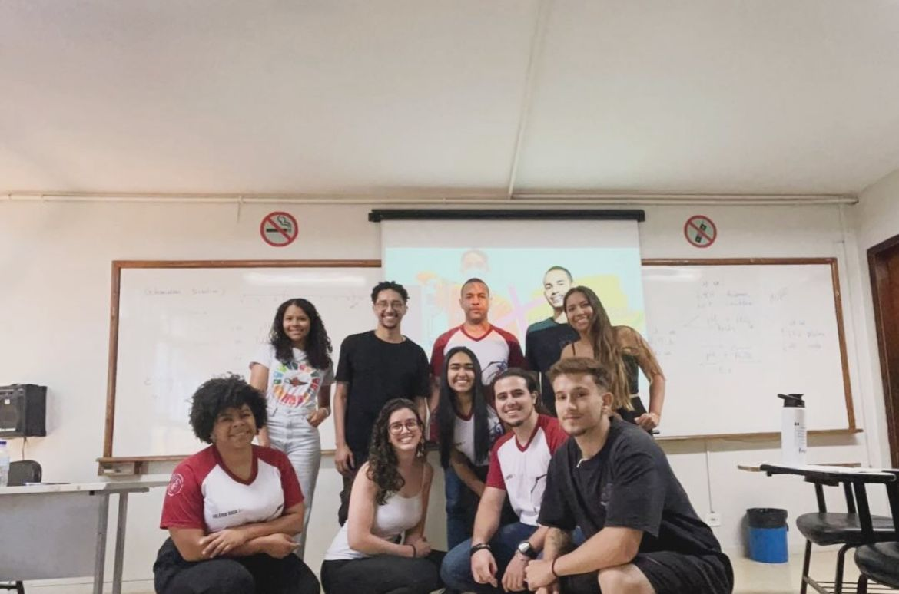

Liga Acadêmica de Cardiologia do UDF
Missão
A LAC concentra as atividades no aprofundamento do conhecimento em cardiologia. Nossas principais atividades são palestras e workshops/ exames direcionados com a participação de especialistas (como gasometria arterial, ecg) aulas práticas com peças anatômicas suínas reais, afim de um aprendizado dinâmico e compreensível das estruturas e funcionamentos cardíacos. Campanhas de saúde como campanha de doação de sangue etc.
Foco das Atividades
- Projetos sociais
- Aprimoramento intelectual
- Investir em Ensino, Pesquisa e Extensão
- Expansão da LAC para novos públicos
- Integração entre Ligas e entidades
- Crescimento acadêmico e profissional
Diretoria
Atualmente a liga possui 30 membros, sendo 9 da administração da liga e 21 ligantes.
São membros da diretoria:
•
Presidente: Carlla Nilvia
•
Vice Presidente: Cristiano Neres
•
Marketing: Tamires Negreiros
•
Designer: Ludymilla Maria
•
Eventos: Raquel Oliveira
•
Secretariado: Brunna Marra
•
Financeiro: Eduarda Vasconcelos
•
Pesquisa e Extensão: Valeria Rosa, Carolina Lopes
Criação
A Liga Acadêmica de Cardiologia do UDF foi criada no segundo semestre de 2018 com o objetivo de promover estudos avançados, pesquisas científicas e grupos de estudo na área de Biomedicina Clínica.
Contato
Fique a vontade para enviar uma mensagem no e-mail oficial da LAC.
E-mail: laecudf1@gmail.com
Atividades Realizadas:
Palestras e Mini Cursos sobre Eletrocardiograma
Descrição: Nesta atividade, o enfermeiro cardiovascular Rian Pessoa apresentou uma palestra informativa sobre os principais pontos do eletrocardiograma. Os participantes tiveram a oportunidade de aprender sobre a interpretação e a importância do ECG na prática clínica.
Palestra sobre Transplante Cardíaco
Descrição: A enfermeira cardiovascular Nathalia Alcantara compartilhou seu conhecimento sobre o transplante cardíaco, abordando desde as patologias que levam à necessidade do procedimento até o pós-transplante. Ela também sensibilizou o público sobre a relevância da doação de órgãos, ressaltando como isso pode salvar vidas.
I Simpósio de Cardiologia e Hemodinâmica
Descrição: A Liga Acadêmica de Cardiologia (LAC) foi convidada a colaborar com o Instituto de Cardiologia e Transplante do Distrito Federal (ICTDF) no I Simpósio de Cardiologia e Hemodinâmica. Participamos da comissão de divulgação e estivemos presentes como ouvintes. O simpósio contou com uma ampla programação de palestras, sorteios e um coffe break, proporcionando uma experiência rica e interativa para todos.
Aula Prática com Peças Anatômicas Reais
Descrição: Sob a orientação da professora Maria Carolina, os alunos tiveram uma aula prática no laboratório com peças anatômicas suínas. Esta experiência permitiu a exploração direta do coração e pulmões, facilitando a conexão entre teoria e prática e aprofundando o entendimento da anatomia e fisiologia do sistema cardiovascular.
Palestra sobre Trajetória Acadêmica até a Residência em Cardiologia
Descrição: Convidamos um residente em enfermagem cardiovascular para compartilhar sua trajetória acadêmica até chegar à residência. A palestra teve como objetivo motivar os participantes a se interessarem pelo programa de residência, que é fundamental para a formação profissional e enriquecimento do currículo.
Workshop de Suporte Básico de Vida (SBV)
Descrição: Realizamos um workshop prático e teórico de Suporte Básico de Vida com a participação de um bombeiro especializado. Os alunos puderam praticar manobras de RCP em bonecos, adquirindo habilidades essenciais para a atuação em situações de emergência.
Palestra sobre Gasometria Arterial
Descrição: Um fisioterapeuta especialista em cuidados intensivos e cardiopneumologia ministrou uma palestra sobre gasometria arterial. Ele forneceu informações valiosas sobre coleta, fisiologia e interpretação dos resultados, além de discutir as condutas adequadas a partir dos resultados das gasometrias.
Atividades Complementares
Além das atividades principais, a LAC também está promovendo campanhas de doação de sangue e organizando visitas técnicas a hospitais, enriquecendo ainda mais o aprendizado dos alunos.